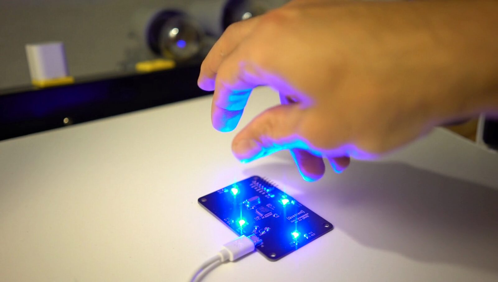
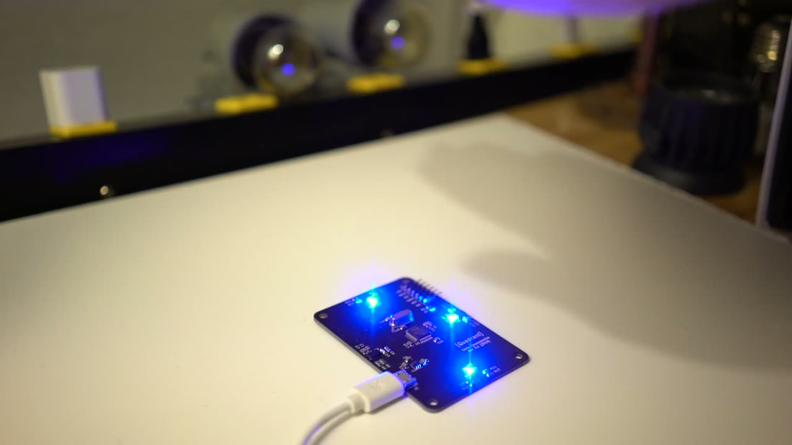
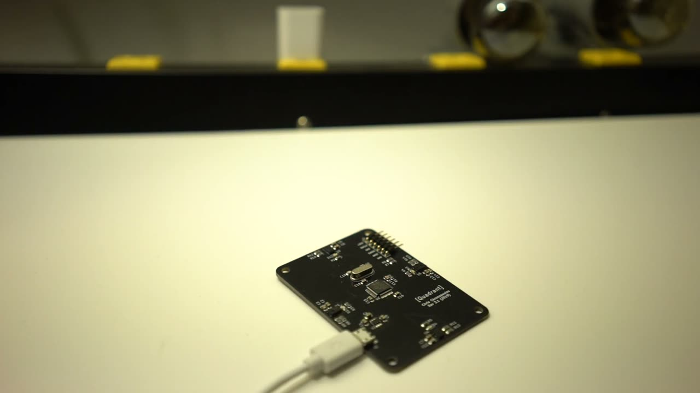
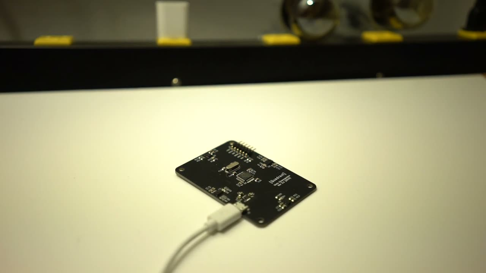
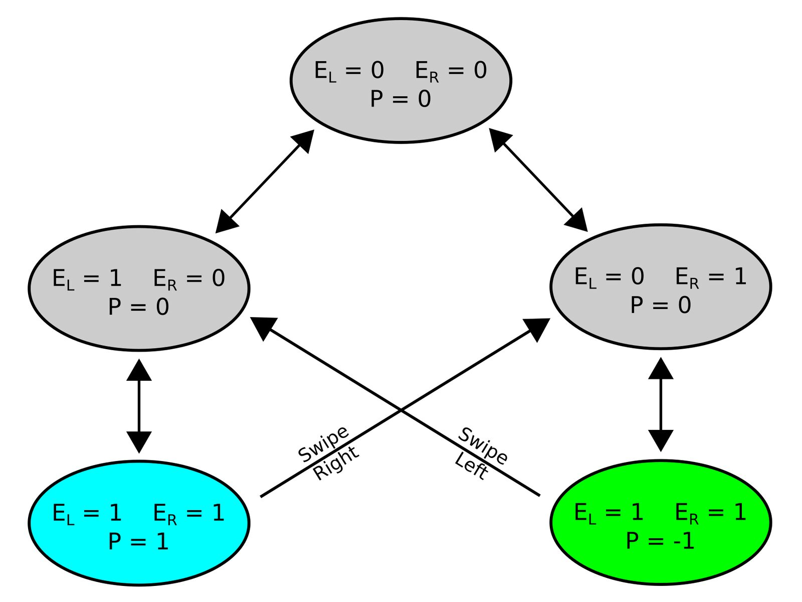
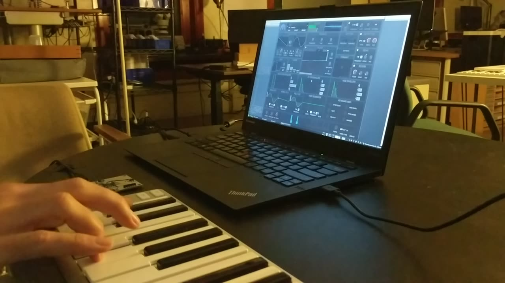

Quadrant: A Multichannel, Time-of-Flight Based Hand Tracking Interface for Computer Music
Abstract
Quadrant is a new human-computer interface based on an array of distance sensors. The hardware consists of 4 time-of-flight detectors and is designed to detect the position, velocity, and orientation of the user's hand in free space. Signal processing is used to recognize gestures and other events, which we map to a variety of musical parameters to demonstrate possible applications. We have developed Quadrant as an open-hardware circuit board, which acts as a USB controller to a host computer.
CCS Concepts
Hardware →Communication hardware, interfaces and storage; Sensor applications and deployments
Human-centered computing →Human computer interaction (HCI); Interaction techniques; Gestural input
Software and its engineering → Software creation and management; Collaboration in software development; Open source mode
Introduction
Free-space hand tracking offers significant advantages in information throughput over conventional musical interfaces [1]. Over the past century, these systems have evolved to include a broad range of technologies and approaches. The theremin was an early hand-tracking instrument with just 2 degrees of freedom (DOF) [2]. Later, datagloves [3][4], electromyographs [5][6][7], and other wearables increased the DOF further, but required unnatural equipment to be worn on the body.
Recently, computer vision techniques have been applied to musical interfaces, for example in the Microsoft Kinect [8][9] and Leap Motion [10][11]. These devices assume models of the subject, and require significant computation to process the data in real time. A number of gestural interfaces have been developed based on the reflection of wave energy off of the hands: infrared reflectometry [12][13], ultrasound [13], and millimeter-wave radar [14] have each been used to control musical parameters in various ways.
Interface Design


Quadrant PCB, showing micro-USB connector, STM32 microcontroller (center), distance sensors and feedback LEDs (blue diamond pattern).
Here we present a human-computer interface (HCI) which performs free-space, unencumbered hand-tracking using an array of distance sensors. The system consists of hardware for measuring distance and orientation of the hands, and software for processing the data into control parameters. This is implemented on a custom circuit board which acts as a USB peripheral to a host computer. From there, the control parameters can be mapped to any number of musical applications, which we explore in Gestures and Mappings.
Distance Sensors
To measure distance, we use four VL6180X time-of-flight sensors from STMicroelectronics [15], which actually measure the time taken for an emitted pulse of light to reflect off a target and arrive back at the sensor. This provides an absolute distance measurement which is independent of the target's reflectance and the ambient light conditions (within limits). The sensors operate at an infrared wavelength of 850 nm, and have an effective distance range of 20 to 25 cm. The cone of acceptance is 25 degrees (full width).
Circuit Board
The sensors are assembled into a “diamond” formation on a custom PCB. The board measures 73 mm by 53 mm; these dimensions were chosen to avoid cross-talk between sensors, while also spanning the approximate length and width of the human hand. Each sensor is accompanied by a blue LED (470 nm to avoid interference with the TOF light) which can be used to indicate proximity to the user.
The sensor and USB communication are managed by an on-board microcontroller (STM32F070CB). Quadrant adheres to the Open Source Hardware (OSHW) Statement of Principles 1.0 [16]; the KiCad project files, schematic, Gerber files and bill of materials (BOM) are available on GitHub under the CERN Open Hardware Licence Version 2 (Strongly Reciprocal) [17].
Firmware
The firmware for the Quadrant microcontroller (MCU) is open source and available on GitHub [18]; here we describe its basic operation. The USB peripheral is registered as a Communications Device Class (CDC). The I2C clock is set to 400 kHz, the maximum speed allowed by the sensors. To assign unique I2C addresses to the four sensors, the MCU toggles each “chip enable” line (pin 4) individually, and then performs a register write to address 0x212.
The sensors are configured according to the recommended settings [19]. The maximum convergence time is set to 20 ms to allow for a board sample rate of 30 Hz. This sample rate is achieved by “pipelining” the range measurement commands with the readouts: all four sensors are commanded to start range measurements first, and then each result is read out in series.
Sensor measurements are compared with a threshold value (currently 180 mm) to determine whether to illuminate the corresponding feedback LED. The sensor measurements (in millimeters) are then packed into a buffer and sent over USB serial. If there is no target in a sensor's field of view, then that channel reports 255, the maximum distance value.
Gestures and Mapping
The raw data which Quadrant sends to the host computer is a 4-channel stream of distance values --- one for each sensor --- updated 30 times per second. For musical control, these channels can be mapped directly to software parameters using a variety of signaling protocols (MIDI, OSC, FUDI [20] etc.) and we expect many users will apply Quadrant in this fashion: as a USB controller with 4 virtual “knobs”.

▶Chorus Demonstration
However, as an array of distance sensors targeting the hand, Quadrant is designed to capture higher-level gestures, and by processing the data in various ways, we can leverage this aspect for some unique HCI applications. Here we introduce aggregates (values constructed from the combination of Quadrant channels over time) and gestures (singular events) which we have found to be useful for musical applications.
Pitch, Roll, and Altitude
If we map the four sensors to the cardinal directions (North, South, East, West), then the pitch is defined as the difference between the North and South measurements, and represents flexion and extension of the wrist. Likewise, roll is the difference between East and West, encoding supination and pronation. Finally, altitude of the hand is the average of all four sensors values. These aggregates are useful in the implementation of, for example, a theremin whose timbre is modulated by pitch and roll of the hand.

▶Timbre-Controlled Theremin
Velocity and Acceleration
In addition to the momentary distance values, we can compute their rate of change, thus measuring the velocity of the target. Given that the board samples are measured at regular intervals , this amounts to a simple delta (first-order backward finite difference) between successive samples:
This can be applied either to the raw sensor data, or to the aggregates defined in Altitude, Pitch, and Roll, effectively adding rotation rate as another aggregate. Similarly, the acceleration can be defined as the second-order backward difference:
These derivatives are useful, for example, in mappings which mimic percussion instruments: a positive threshold crossing of linear acceleration can be set to trigger a drum hit, and the downward velocity prior to the trigger can be mapped to the amplitude of the hit.
Plucking
If a target (e.g. a finger) enters the field of view of one of the sensors from the side, the distance reading will suddenly jump from 255 (no target found) to a smaller value (engagement).
We call this gesture plucking because it resembles the playing of a harp, where each sensor virtualizes an individual string. The resulting effect is similar to that of a laser harp [21], but with a distinct advantage: the height at which the “beam” is broken can be measured and used in the mapping. For example, in implementing a laser harp, we may choose to map the pluck height to the timbre of the sound, in a way that mimics how the sound of a string instrument is affected by where along the strings it is plucked [22].

▶Plucking Demonstration
Swiping
Another simple gesture we can define is swiping, which is when the hand starts outside of the Quadrant field of view (FOV), then enters the FOV of at least two sensors (one at a time) from the side, and then continues past in the same direction. Using this principle, it is straightforward to implement a processing pipeline which can detect left swipes, right swipes, up swipes, and down swipes independently.
The algorithm builds off of the notion of engagement introduced in Plucking, and extends it with a priming variable. For a single dimension, say left-to-right, the priming () stores whether the order of engagement transitions has been leading up to a right swipe (), a left swipe (), or neither ().


State diagram for detecting left and right swipes from engagement with two sensors ( and ) and a priming variable .
One use for swiping in computer music is as a mode selector. A user can have several presets prepared in a piece of software (e.g. a synthesizer), and then swipe left/right to navigate the various settings.

▶Swiping Demonstration
Summary
Quadrant integrates four time-of-flight sensors into a palm-sized, open-source circuit board designed for hand tracking in free-space. We have defined aggregate measurements related to altitude, pitch and roll, first- and second-order derivatives, and two types of gestures that we have found useful for musical applications.
Citations
- ↩Oulasvirta, A., Roos, T., Modig, A., & Leppänen, L. (2013). Information Capacity of Full-body Movements. In Proceedings of the SIGCHI Conference on Human Factors in Computing Systems (pp. 1289–1298). New York, NY, USA: ACM. https://doi.org/10.1145/2470654.2466169
- ↩Wikipedia contributors. (2018). Theremin. Retrieved from https://en.wikipedia.org/wiki/Theremin
- ↩Serafin, S., Trento, S., Grani, F., Perner-Wilson, H., Madgwick, S., & Mitchell, T. (2014). Controlling Physically Based Virtual Musical Instruments Using The Gloves. In Proceedings of the International Conference on New Interfaces for Musical Expression (pp. 521–524). London, United Kingdom: Goldsmiths, University of London. Retrieved from http://www.nime.org/proceedings/2014/nime2014_307.pdf
- ↩Lai, C.-H., & Tahiroglu, K. (2012). A Design Approach to Engage with Audience with Wearable Musical Instruments: Sound Gloves. In Proceedings of the International Conference on New Interfaces for Musical Expression. Ann Arbor, Michigan: University of Michigan. Retrieved from http://www.nime.org/proceedings/2012/nime2012_197.pdf
- ↩Nymoen, K., Haugen, M. R., & Jensenius, A. R. (2015). MuMYO - Evaluating and Exploring the MYO Armband for Musical Interaction. In E. Berdahl & J. Allison (Eds.), Proceedings of the International Conference on New Interfaces for Musical Expression (pp. 215–218). Baton Rouge, Louisiana, USA: Louisiana State University. Retrieved from http://www.nime.org/proceedings/2015/nime2015_179.pdf
- ↩Jensenius, A. R., Sanchez, V. G., Zelechowska, A., & Bjerkestrand, K. A. V. (2017). Exploring the Myo controller for sonic microinteraction (pp. 442–445).
- ↩Erdem, C., Camci, A., & Forbes, A. (2017). Biostomp: A Biocontrol System for Embodied Performance Using Mechanomyography (pp. 65–70).
- ↩Yoo, M.-J., Beak, J.-W., & Lee, I.-K. (2011). Creating Musical Expression using Kinect. In Proceedings of the International Conference on New Interfaces for Musical Expression (pp. 324–325). Oslo, Norway. Retrieved from http://www.nime.org/proceedings/2011/nime2011_324.pdf
- ↩Şentürk, S., Lee, S. W., Sastry, A., Daruwalla, A., & Weinberg, G. (2012). Crossole: A Gestural Interface for Composition, Improvisation and Performance using Kinect. In Proceedings of the International Conference on New Interfaces for Musical Expression. Ann Arbor, Michigan: University of Michigan. Retrieved from http://www.nime.org/proceedings/2012/nime2012_185.pdf
- ↩Han, J., & Gold, N. (2014). Lessons Learned in Exploring the Leap Motion(TM) Sensor for Gesture-based Instrument Design. In Proceedings of the International Conference on New Interfaces for Musical Expression (pp. 371–374). London, United Kingdom: Goldsmiths, University of London. Retrieved from http://www.nime.org/proceedings/2014/nime2014_485.pdf
- ↩Tormoen, D., Thalmann, F., & Mazzola, G. (2014). In Proceedings of the International Conference on New Interfaces for Musical Expression (pp. 207–212). London, United Kingdom: Goldsmiths, University of London. Retrieved from http://www.nime.org/proceedings/2014/nime2014_536.pdf
- ↩Wikipedia contributors. (2015). D-Beam. Retrieved from https://en.wikipedia.org/wiki/D-Beam
- ↩White, P. (2001). Alesis AirFX Multi-Effects Processor. Retrieved from http://media.soundonsound.com/sos/jan01/articles/alesisair.asp
- ↩Bernardo, F., Arner, N., & Batchelor, P. (2017). O Soli Mio: Exploring Millimeter Wave Radar for Musical Interaction (pp. 283–286).
- ↩VL6180X: Proximity and ambient light sensing (ALS) module. (2014).
- ↩Association, O. S. H. (2019). Open Source Hardware (OSHW) Statement of Principles 1.0. Retrieved from https://www.oshwa.org/definition/
- ↩Chronopoulos, C. (2019). quadrant-board on GitHub. Retrieved from https://github.com/chronopoulos/quadrant-board
- ↩Chronopoulos. (2019). quadrant-firmware on GitHub. Retrieved from https://github.com/chronopoulos/quadrant-firmware
- ↩AN4545: VL6180X basic ranging application note. (2014).
- ↩Wikipedia contributors. (2017). FUDI. Retrieved from https://en.wikipedia.org/wiki/FUDI
- ↩Wikipedia contributors. (2017). Laser harp. Retrieved from https://en.wikipedia.org/wiki/Laser_harp
- ↩Traube, C., & O. Smith, J., III. (2000). ESTIMATING THE PLUCKING POINT ON A GUITAR STRING.